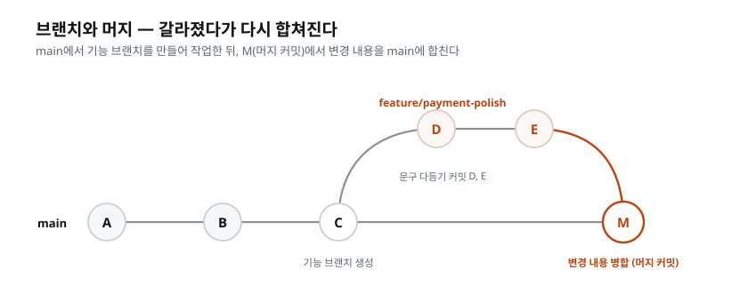
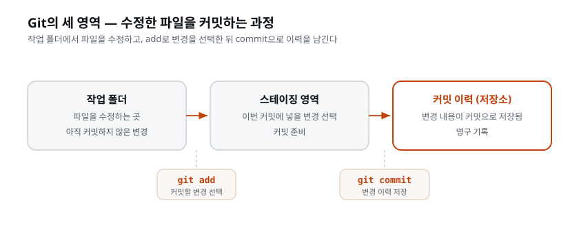
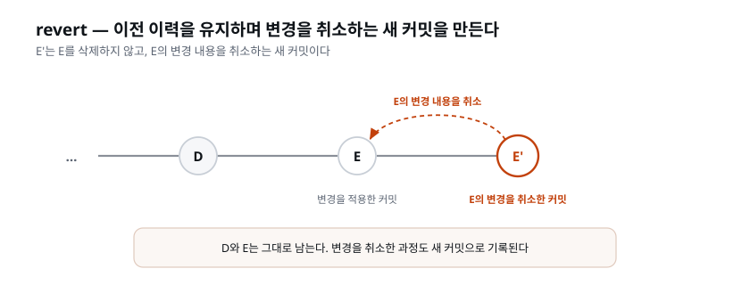

이 장이 끝나면: 커밋·브랜치·머지·PR·되돌리기(revert)가 각각 무엇이고 왜 쓰는지 설명할 수 있다. 그리고 push가 왜 사람이 정하는 순간인지 말할 수 있다.
인프라를 세울 때 코드를 GitHub에 올렸다. 그때 Git은 "이력이 남는 보관소"였다. 이 장에서는 Git을 일상적인 작업에 활용하는 방법을 배운다. 왜 하필 지금인가 — 코드를 보는 눈이 생겼기 때문이다. 코드리뷰어와 QA를 세우고 보안 엔지니어까지 붙이면서, "지금 뭔가 잘못됐다"를 알아채는 쪽은 갖췄다. 알아챈 다음이 문제다. 잘못을 발견해도 되돌릴 방법이 없으면, 발견은 불안만 늘린다. Git이 그 반대편을 맡는다 — 되돌릴 수 있다는 확신. 확신이 있어야 대담하게 바꿀 수 있다.
이 "순서"에는 의도가 있다. Git을 첫날에 가르치지 않은 이유는, 되돌릴 대상(코드)도 없고 되돌려야 할 이유(대담한 변경)도 아직 없던 시점에 명령어부터 외우게 하면 Git이 그저 귀찮은 절차로만 각인되기 때문이다. 지금은 다르다. 검증하는 눈이 있고, AI가 여러 파일을 한꺼번에 바꾸는 경험을 이미 했다. "이걸 잘못 건드리면 어쩌지"라는 불안을 한 번쯤 느껴 본 지금이, Git이 왜 필요한지 직접 경험을 통해 이해할 수 있는 시점이다. 도구는 필요를 느낀 뒤에 배울수록 활용법을 익히기 쉽다.
앞에서 세운 검증 역할들 — 코드리뷰어·QA·보안 엔지니어 — 은 망가진 것을 알려 준다. 거기까지가 그들의 일이다. 망가지기 전으로 되돌리는 일은 하지 않는다. 알아채는 쪽만 있고 되돌리기가 없으면, 무엇이 잘못됐는지 알아도 손으로 하나하나 원상 복구해야 한다. 이 장은 그 나머지 절반, 되돌리는 능력을 세운다.
되돌릴 수 있는지 여부는 판단을 바꾼다. "고쳐도 된다"는 확신이 있어야 사람은(그리고 AI는) 낡은 코드를 과감하게 뜯어고친다. 되돌릴 수 없으면 코드를 조심스럽게 두게 되고, 그래서 개선되지 않은 채로 남는다.
Git은 코드의 변경 이력을 관리하는 프로그램이다. 모든 변경을 지점(커밋)으로 저장해 두므로, 언제든 과거의 어느 지점으로 돌아갈 수 있다. AI에게 과감한 변경을 맡길 수 있는 것도 이 되돌리기 때문이다.
'Git'이라는 이름 자체에는 거창한 뜻이 없다. 리눅스를 만든 리누스 토르발스가 2005년에 이 도구를 만들면서 붙인 이름인데, 본인이 "고집 센 놈"이라는 영국식 속어에서 따왔다고 밝혔다. 이름의 유래보다 중요한 것은 Git이 오늘날 전 세계 개발의 사실상 표준이라는 사실이다. 회사에 들어가든, 오픈소스에 기여하든, 혼자 만들든 — 코드를 다루는 거의 모든 현장이 Git으로 돌아간다. 그래서 Git은 "이 강의에서만 쓰는 도구"가 아니라, 개발자로서 평생 쓰는 기본기다.
한 가지 흔한 오해를 미리 풀자. Git과 GitHub는 다른 것이다. Git은 내 컴퓨터에서 변경 이력을 관리하는 프로그램이고, GitHub는 그 이력을 인터넷에 올려 두고 남과 공유하는 웹 서비스다. Git 없이는 GitHub를 제대로 쓸 수 없지만, GitHub 없이도 Git은 내 컴퓨터 안에서 완전히 동작한다. 저장소를 처음 올릴 때 우리가 쓴 것은 주로 GitHub였고, 이 장에서 파고드는 것은 Git 본체, 곧 이력을 다루는 법이다.
AI는 한 번에 여러 파일을 빠르게 바꾼다. 편리하지만, 그중 하나가 잘못됐을 때 "뭐가 바뀌었더라"를 사람이 다 기억할 수 없다. Git은 바뀐 것을 전부, 정확히 기록한다. AI의 작업을 커밋 단위로 끊어 두면, 문제가 생겼을 때 "이 커밋부터 이상하다"를 짚어 그 지점만 되돌릴 수 있다. Git은 AI 협업의 실행취소(undo)다.
이 점을 조금 더 풀어 보자. 사람이 직접 코딩하던 시절에는 변경이 느렸다. 한 시간에 파일 하나를 손보는 식이라, 무엇을 바꿨는지 머릿속에 대충 남아 있었다. AI는 다르다. 한 번의 지시로 데이터베이스 스키마, 백엔드 API, 프론트 화면을 동시에 건드리기도 한다. 속도가 빨라진 만큼 사람의 기억이 따라가지 못하는 구간이 생긴다. 이 간극을 메우는 것이 Git의 이력이다. "AI가 방금 무엇을 어떻게 바꿨는가"를 사람의 기억이 아니라 Git의 기록에 맡기는 것 — 이것이 AI 시대에 Git이 선택이 아니라 필수가 된 이유다.
또 하나. AI에게 일을 맡길수록 잘게 커밋하는 습관이 중요해진다. AI가 20개 파일을 한 번에 바꾸고 그걸 커밋 하나로 뭉쳐 두면, 나중에 그중 하나가 문제여도 20개를 통째로 되돌려야 한다. 반대로 의미 단위로 커밋을 나눠 두면, 문제가 된 그 한 덩어리만 도려낼 수 있다. AI의 작업 속도가 빠를수록, 그 결과물을 되돌릴 수 있는 '단위'를 사람이 관리해 줘야 한다. 이 이야기는 바로 뒤 용어 정리의 커밋 항목과 '프롬프트 작성법'의 커밋 단위 지시에서 이어진다.
[짚고 가기] "Git은 어렵다"는 선입견을 갖기 쉽다. 하지만 실제로 어려운 것은 Git의 내부 개념(브랜치·머지의 원리)이 아니라 명령어 암기인데, 이 과정에서는 그 명령어를 AI에게 시키므로 그 부담이 없다. 여기서 기억할 점은 이것이다 — Git 명령어를 외울 필요가 없다. 대신 Git으로 무엇을 왜 하는지만 이해하면 된다. 이렇게 마음먹으면 심리적 저항이 크게 준다.
git rebase같은 겁나는 명령을 외우던 예전 방식과는 다르다. 개념만 이해하면, 실행은 "커밋 나눠서 해줘" 같은 우리말 지시로 끝난다.
이 장에서 처음으로 제대로 다루는 Git 용어들이다. 앞에서 스치듯 나온 것도 있지만, 여기서 각각을 정확히 잡고 간다. 개발이 처음이라면 이 절이 이 장에서 가장 낯설 수 있는데, 완벽히 외울 필요는 없다. "이런 개념이 있구나" 정도로 눈에 익혀 두면 쓰면서 자연스럽게 손에 붙는다.
변경을 저장하는 하나의 지점. 사진을 찍듯 그 순간의 코드 상태를 그대로 저장한다. 좋은 커밋은 "의미 있는 한 덩어리"다 — "결제 승인 로직 추가"처럼 한 가지 일을 담는다. 뒤죽박죽 열 가지를 한 커밋에 담으면, 나중에 그중 하나만 되돌릴 수 없다.
'커밋(commit)'이라는 단어는 원래 '맡기다·약속하다·확정하다'라는 뜻이다. 은행에서 "이 거래를 확정합니다"라고 도장을 찍는 순간을 떠올리면 감이 온다. 코드를 이리저리 바꾸다가 "여기까지를 하나의 완결된 상태로 확정한다"고 선언하는 것이 커밋이다. 확정하기 전까지의 변경은 아직 물 위에 떠 있는 임시 상태이고, 커밋하는 순간 Git의 이력에 영구히 남는다. 그래서 커밋은 되돌아올 수 있는 안전한 발판을 하나 만드는 행위이기도 하다. 발판이 촘촘할수록 넘어져도 멀리 떨어지지 않는다.
커밋 메시지는 왜/무엇을 바꿨는지를 남기는 기록이다. 이것도 AI가 잘 쓴다 — 바뀐 내용을 읽고 요약해 주므로. 다만 사람은 그 메시지가 실제 변경과 맞는지 본다.
커밋 메시지가 왜 중요한지 한 번 더 짚자. 3개월 뒤의 나(또는 동료)가 이력을
훑어보며 "이 코드는 왜 이렇게 됐지?"를 물을 때, 유일한 대답이 커밋 메시지다.
update, fix, 수정 같은 메시지는 아무 대답도 못 한다. 반대로 "골목 라이브
초과 판매 사고 재발 방지 — 결제 전 잔여석 재확인 추가" 같은 메시지는, 코드를
읽지 않고도 그 변경의 의도를 알려 준다. AI에게 커밋 메시지를 맡길 때 "무엇을
왜 바꿨는지 한국어로"를 팀 규칙으로 적어 두는 이유가 여기 있다.
입문자가 커밋을 오해하는 흔한 방식이 있다. "커밋은 바뀐 부분만 저장하는 것"이라는 생각이다. 실제로 Git은 커밋마다 그 순간 프로젝트 전체의 상태(스냅샷)를 기억한다고 이해하는 편이 훨씬 정확하다. 그래서 어느 커밋으로 돌아가든, 그 시점의 프로젝트가 통째로 재현된다. 되돌리기가 든든하게 느껴지는 이유가 이것이다 — 과거의 한 장면을 부분이 아니라 통째로 붙잡아 두기 때문이다. (내부적으로 Git이 저장 공간을 아끼는 영리한 방법을 쓰긴 하지만, 사용자 입장에서는 "커밋 = 그 순간의 전체 사진"으로 이해하면 충분하다.)
본류에서 갈라져 나온 작업 가지. 여러 사람이(또는 여러 실험이) 서로를 방해하지 않고 동시에 일하게 해 준다. 온티켓처럼 혼자 하는 프로젝트에서도 브랜치는 유용하다 — "결제 기능"을 별도 가지에서 만들고, 다 되면 본류에 합친다. 만드는 도중의 불완전한 코드가 본류(언제나 돌아가야 하는 곳)를 더럽히지 않는다.
feature/payment 처럼 작업별로 갈라 만든다'브랜치(branch)'는 그대로 '나뭇가지'라는 뜻이다. 나무의 굵은 줄기(main)에서 가지가 뻗어 나오고, 그 가지 끝에서 새 잎(변경)이 자란다. 가지에서 아무리 실험을 해도 줄기는 멀쩡하다. 그러다 그 가지의 열매가 쓸 만하면 줄기에 접붙이고 (머지), 실패한 실험이면 가지째 잘라 버리면(브랜치 삭제) 그만이다. 이 비유가 브랜치의 핵심을 담는다 — 위험한 시도를 본류와 격리하는 것.
왜 굳이 가지를 나누는지 구체적인 장면으로 보자. 온티켓은 지금 옆자리 동료가
접속해 티켓을 예매할 수 있는, '돌아가는' 상태다. 그런데 결제 화면 문구를 손보다가
실수로 예매가 안 되게 만들었다고 하자. 이 변경이 곧장 main에 들어가 있으면,
그 순간 온티켓 전체가 멈춘다. 반면 feature/payment-polish라는 가지에서
작업했다면, main의 온티켓은 여전히 멀쩡히 돌아가고, 내 실수는 그 가지 안에만
갇혀 있다. main은 언제나 초록불이라는 원칙 — 이것이 브랜치를 나누는 진짜 이유다.
여기서 두 가지 관련 용어를 함께 익혀 두자. 지금 내가 서 있는 브랜치를 체크아웃(checkout)했다고 말한다. 작업 공간을 그 가지의 상태로 바꿔 놓는 것이다. 그리고 여러 브랜치가 갈라졌다 합쳐지는 그림 전체를 흔히 브랜치 트리라고 부른다. 이 과정에서는 이 명령들을 직접 칠 일이 거의 없다 — "이 작업은 새 브랜치에서 해줘" 같은 지시로 AI가 대신 갈아타 준다.
머지는 브랜치의 변경을 다른 브랜치로 합치는 것이다. PR(풀 리퀘스트) 은 "이 브랜치를 main에 합쳐도 될까요?"라고 정식으로 요청하는 절차다. 회사에서 PR은 검토와 자동 검사의 관문 역할을 한다 — 사람이 코드를 리뷰하고, 자동 검사가 통과해야 합쳐진다.
'머지(merge)'는 '합치다·병합하다'라는 뜻 그대로다. 나뭇가지 비유로 돌아오면, 따로 자란 가지의 열매를 줄기에 접붙이는 순간이 머지다. 대개는 Git이 알아서 두 갈래의 변경을 매끄럽게 합쳐 준다. 다만 같은 파일의 같은 줄을 양쪽에서 서로 다르게 바꿨을 때는 Git이 어느 쪽이 옳은지 판단할 수 없어서, 사람에게 "이 부분은 둘 중 뭘로 할래?"라고 묻는다. 이것이 흔히 말하는 충돌(conflict)이다. 혼자 하는 온티켓 프로젝트에서는 충돌이 드물지만, 개념만 알아 두자 — 충돌은 사고가 아니라 "사람의 결정이 필요한 지점"이라는 Git의 정중한 물음이다.
'PR'은 왜 하필 '풀 리퀘스트(pull request)', 곧 '당겨 가 달라는 요청'일까. 내가 만든 가지의 변경을 상대(main을 관리하는 쪽)에게 "당신 쪽으로 당겨(pull) 가져가 합쳐 주세요"라고 부탁하는 데서 나온 이름이다. 핵심은 PR이 곧바로 병합하는 대신 검토를 요청하는 절차라는 점이다. 곧장 합치지 않고 일부러 한 박자 멈추는 것 — 그 멈춤 동안 사람이 리뷰하고 자동 검사가 돌아간다. 즉 PR은 "합치기 전에 반드시 거쳐야 하는 관문"을 만드는 장치다. 과정 첫머리부터 이어진 퍼미션(사람이 검토하고 승인하는 절차)의 정신이, Git의 세계에서는 PR이라는 형태로 나타난다고 봐도 좋다.
PR 화면이 실제로 보여 주는 것은 무엇이 바뀌었는가(diff)다. Files changed(바뀐 파일) 탭을 열면, 초록색으로 표시된 줄이 새로 들어온 코드이고 빨간색으로 표시된 줄이 지워진 코드다. 이 색칠된 차이를 훑는 것만으로 "이 PR이 무엇을 했는가"를 코드 전체를 읽지 않고 파악할 수 있다. 회사에서 리뷰어가 하는 일이 바로 이 화면을 보는 것이다. 이 화면을 여는 습관은 팀에 들어갔을 때 그대로 쓰인다 — 내가 방금 무엇을 main에 합치려 하는지 한 번 더 검토하는 퍼미션의 순간이 된다.
브랜치와 머지가 이력에 어떤 모양으로 남는지 그림으로 보자.

main은 흔들림 없이 이어지고, 기능 작업은 옆 가지(D, E)에서 이뤄지다가
PR을 거쳐 M 지점에서 본류로 합쳐진다. 이 그림이 브랜치 흐름의 전부다.
여기서 이 과정의 방식을 못 박고 간다. 브랜치와 PR은 사람이 여럿일 때 값이 나온다 — 남이 내 변경을 읽고 판단할 자리가 필요해서 만든 장치이기 때문이다. 이 과정에서는 각자 자기 저장소에서 혼자 만든다. 읽어 줄 사람이 없는 PR은 형식만 남는다. 그래서 여기서는 main 하나로 간다. 고치고, 커밋하고, push한다. 대신 push가 가벼운 일이 아니게 된다. 뒤에서 저장소에 검사와 배포를 push에 걸면, push 명령 한 번이 배포를 결정하는 일이 된다. 그래서 커밋은 AI가 하고, push는 사람이 "푸시해줘"라고 할 때만 한다. 사람이 여럿이 되면 브랜치를 치고 PR로 간다. 그때 필요한 개념은 방금 읽은 그대로다.
스테이징은 "이번 커밋에 포함할 변경"을 골라 담는 단계다(git add).
.gitignore는 "버전 관리에서 제외할 것" 목록 — .env, node_modules 등.
저장소를 GitHub에 처음 올릴 때 이미 이 제외가 우리를 지켰다.
'스테이징(staging)'을 조금 더 풀자. 'stage'는 무대·연단이라는 뜻인데, 여기서는 "커밋이라는 무대에 올릴 배우를 고르는 대기 공간"이라고 보면 된다. 파일을 이것저것 바꿔 놓았어도, 그중 이번 커밋에 넣을 것만 무대에 올린다(스테이징한다). 나머지는 무대 뒤에 남겨 두고 다음 커밋으로 미룰 수 있다. 이 '고르기' 단계가 있어서, 앞서 말한 의미 단위 커밋이 가능해진다. 관련된 변경만 골라 담고, 성격이 다른 변경은 따로 담는 것이다. 우리는 이 고르기까지 대개 AI에게 맡긴다 — "안내 문구 수정은 문구대로, 승인 로직 수정은 그것대로 나눠서 커밋해줘"처럼.
Git이 변경을 다루는 세 자리를 그림으로 정리하면 이렇다.

.gitignore도 다시 짚자. 'ignore'는 '무시하다'라는 뜻으로, 이 파일에 적힌
목록은 Git이 아예 못 본 척한다. 왜 어떤 파일은 일부러 이력에서 빼는가 —
크게 두 부류다. 첫째, 비밀(시크릿). .env에는 결제 키나 데이터베이스 접속
정보 같은 민감한 값이 들어 있다. 이게 GitHub에 올라가면 남이 우리 계정을 쓸 수
있다. 둘째, 자동 생성물. node_modules(내려받은 부품 더미)나 빌드 결과물은
언제든 다시 만들 수 있으므로 이력에 담을 이유가 없고, 담으면 저장소만 무거워진다.
시크릿이 이력에 한 번 들어가면 왜 특별히 위험한지도 알아 두자. 앞서 커밋은
그 순간의 전체 상태를 그대로 저장한다고 했다. 문제는 시크릿이 담긴 커밋을
나중에 지워도, 이력의 과거 어느 지점에는 그 시크릿이 그대로 남는다는 점이다.
지금 보이는 코드에서 키를 지우는 것과, 이력에서 키를 지우는 것은 전혀 다른 일이다.
앞은 한 줄 지우면 끝이지만, 뒤는 과거의 모든 커밋을 고쳐 쓰는 큰 수술이다. 특히
GitHub에 한 번 올라가면, 그 사이 누군가 봤을 가능성까지 감안해 결제 키·접속 정보를
전부 새로 발급해야 하는 사고가 된다. 그래서 시크릿은 "들어간 뒤 지우는" 게 아니라
"처음부터 못 들어가게 막는" 것이 정답이다. 지금 온티켓에서는 .gitignore가
1차로 막고, 보안 엔지니어를 세울 때 걸어 둔 Claude Code 보안 훅이 AI 경로에서 또
막는다. 이 둘이 시크릿을 맡는 자리다.
revert는 '되돌리다·뒤집다'라는 뜻인데, Git에서의 revert는 초심자의 직관과 살짝 다르다. 많은 사람이 "되돌리기"를 "과거를 지우고 없던 일로 만드는 것"으로 상상한다. Git의 revert는 그렇지 않다. 과거의 어떤 커밋이 한 일을 정확히 반대로 실행하는 '새 커밋'을 하나 더 쌓는다.
비유하면 이렇다. 장부에 "100원 입금"이라고 잘못 적었을 때, revert는 그 줄을 지우개로 지우는 게 아니라 아래에 "100원 출금(위 입금 취소)"이라고 새로 한 줄을 적는 방식이다. 결과적으로 잔액은 원래대로 돌아오지만, "입금했다가 취소했다"는 사실 자체가 장부에 남는다. 이것이 왜 좋은가 — 이력을 조작하지 않기 때문에 안전하다. 누구도 과거를 몰래 바꾸지 않았고, 무슨 일이 있었는지 모두 투명하게 보인다.
이력이 어떻게 남는지 그림으로 확인하자.

E는 그 자리에 그대로 있고, 그 뒤에 E'(E-프라임)라는 새 커밋이 하나 쌓였다.
결과물은 E 이전 상태로 돌아왔지만, "E를 했다가 E'로 되돌렸다"는 두 사건이
모두 이력에 남는다. 그래서 나중에 "아, E를 되돌린 게 실수였네, 다시 살리자"도
얼마든지 가능하다. 되돌리기를 되돌릴 수 있다는 것 — 이것이 revert가 안전한
이유다. 그림은 가장 단순한 경우, 맨 끝 커밋을 되돌리는 경우를 그렸다.
되돌릴 수 있는 것은 맨 끝 커밋만이 아니다. 이력 가운데 낀 커밋 하나만 골라 되돌릴 수도 있다. 뒤에 다른 커밋이 여럿 쌓여 있어도 원리는 같고, 되돌리는 새 커밋은 언제나 이력의 맨 끝에 쌓인다. 다만 이것이 가능하려면 조건이 하나 있다 — 커밋이 의미 단위로 나뉘어 있어야 한다. 문구 수정과 날짜 표기 수정을 커밋 둘로 나눠 뒀다면 앞의 것만 정확히 도려낼 수 있지만, 둘이 한 커밋에 뭉쳐 있었다면 하나를 되돌리려다 멀쩡한 나머지까지 함께 잃는다. 커밋을 나눠 두라는 요구는 정리 취향이 아니라, 바로 이 정밀한 되돌리기를 위한 투자다.
과거를 갈아엎는 다른 방법(reset, checkout 등)도 있지만 이 과정에서는 쓰지
않는다. 이 과정에서 과거를 다루는 방법은 기록이 남는 revert 하나뿐이다.
[짚고 가기] 용어가 한꺼번에 쏟아지지만, 지금 다 외우려 할 필요는 없다. 실전에서 정말 손에 붙어야 하는 감각은 세 가지로 압축된다 — (1) 커밋은 되돌아올 수 있는 발판, (2) 브랜치는 본류를 지키는 격리 공간, (3) 명령은 AI가 대신 쳐 주고, push는 사람이 "푸시해줘"라고 할 때만 한다. 나뭇가지 비유(브랜치·머지)와 장부 비유(revert)를 머릿속에 간단히 그려 두면 오래 남는다. 특히 Git과 GitHub는 헷갈리기 쉬운데, "Git은 내 컴퓨터에서 이력을 관리하는 프로그램, GitHub는 그 이력을 인터넷에 올려 두는 웹 서비스"라는 한 줄만 붙들면 구분이 또렷해진다.
Git 작업은 "어떻게(명령어)"를 사람이 알 필요가 없는 대표적인 영역이다. 앞 장들에서 익힌 원칙 — 목표를 말하고, 완료 기준을 넣고, 되돌릴 여지를 남긴다 — 이 여기서도 그대로 통하고, 특히 "무엇을 왜"에만 집중한 지시가 잘 통한다.
한 가지를 더 얹는다. Git 작업은 하루에도 몇 번씩 되풀이된다. 커밋 메시지를 어떻게 쓸지는
회사 문서(docs/가이드/깃커밋컨벤션.md)에 이미 있어서, 프롬프트에 다시 적지 않는다. 프롬프트에는
이번에만 다른 것 — 이번 커밋을 어떻게 가를지 — 만 말한다.
성격이 다른 작업을 둘 하고 난 뒤라면, 커밋을 시킬 때 이렇게 말한다.
방금 바꾼 것들 커밋해줘. 문구 수정이랑 날짜 표기 수정은 따로따로.여기서 사람이 보탠 것은 이번 변경에서 어디가 경계인가다 — 문구 수정과 날짜 표기 수정은 다른 덩어리라는 것. 둘 다 화면 작업이지만 건드리는 화면도 목적도 다르니, 한 커밋에 묶을 이유가 없다. 무엇이 한 덩어리인지는 방금 작업을 시킨 사람이 가장 잘 안다.
의미 단위 분리를 요구하는 이유 — 나중에 "문구 수정만 되돌리고 싶다"가 가능해지기 때문이다. 뭉뚱그린 커밋은 되돌리기의 해상도를 떨어뜨린다.
'해상도'라는 말을 한 번 더 풀자. 사진의 해상도가 높으면 일부만 잘라내도 또렷하듯, 커밋을 잘게 나눠 두면 이력의 어느 한 조각만 정확히 도려낼 수 있다. 반대로 하루치 작업을 커밋 하나에 뭉쳐 두면, 그 안의 잘못된 한 줄 때문에 멀쩡한 나머지까지 통째로 되돌려야 한다. 그래서 "커밋을 나눠 달라"는 요구는 단순한 정리 취향이 아니라, 미래의 되돌리기를 위한 투자다.
커밋이 기대만큼 나뉘지 않거나 메시지가 부실할 때가 있다. 그때 이미 만든
커밋을 취소하고 다시 나누게 하지는 않는다 — 그것은 이력을 고쳐 쓰는 일이고, 이 장에서 과거를
다루는 방법은 기록을 남기는 revert 하나뿐이다. 대신 "다음 커밋부터는 문구 수정이랑 날짜 표기
수정을 나눠줘"처럼 다음 커밋부터 나눠 달라고 말하고, 같은 일이 되풀이되면 회사 문서의
커밋 규칙을 AI가 읽고 있는지부터 본다.
[짚고 가기] 커밋 단위 지시는 "왜 굳이 나누지?"라는 의문이 가장 자주 드는 지점이다. 앞의 revert 설명과 붙여 놓고 보면 답이 분명해진다. 커밋을 둘로 나눠 뒀다면 이력 가운데 낀 하나만 골라 되돌릴 수 있고, 하나로 뭉쳐 뒀다면 그럴 수 없다. 지금 나눠 두는 수고가, 나중에 사고 났을 때의 정밀 수술을 가능하게 한다.
깃커밋컨벤션.md)에 이미 있다. 프롬프트에는 이번에만
다른 것 — 이번 커밋의 경계가 어디인지 — 만 말한다.